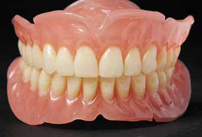
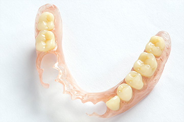
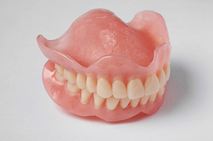
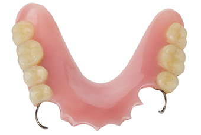
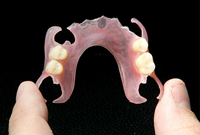
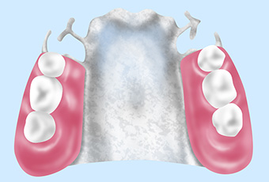
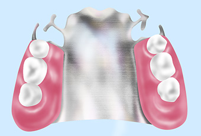
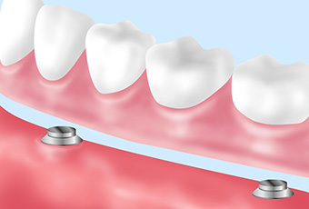
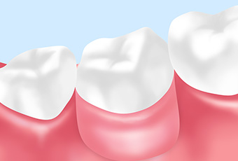

- ホーム
- 入れ歯
天王寺まつい総合歯科の入れ歯治療
快適に使える最適な入れ歯を
入れ歯をお使いの方は、食事や会話の際にズレたり落ちたりするなど、いろいろな不具合に悩まされていることかと思います。これは入れ歯の性質上、ある程度は仕方のないことだといえます。
けれども、患者さまに最適な入れ歯を製作することで、そのストレスを少しでも減らすことは可能です。当院では、毎日快適に使っていただけるような入れ歯をオーダーメイドで提供しております。
オーダーメイドの入れ歯治療

当院では、一人ひとりに最適な入れ歯を作るために、現状とご要望をしっかりとヒアリングさせていただきます。どんなことにお困りで、どのような入れ歯を希望されているのか、できるだけ詳しくお伝えください。
治療計画や入れ歯の設計に反映いたします。ちなみに、入れ歯には「部分入れ歯」と「総入れ歯」の2種類があります。それぞれの特徴は以下の通りです。
-

部分入れ歯
部分入れ歯は、1～数本の歯を失った場合に使用する装置です。人工の歯と歯茎に相当する義歯床、それらを歯に固定する留め具（クラスプ）から構成されています。
-

総入れ歯
総入れ歯は、基本的にはすべての歯を失った場合に使用する装置です。人工の歯と歯茎および口腔粘膜に相当する義歯床から構成されています。
保険入れ歯と自費入れ歯の違い
保険診療の入れ歯

保険診療の入れ歯では、既製の人工の歯と義歯床の部分にレジンなどのプラスチック材料しか使用できません。これは部分入れ歯と総入れ歯に共通していることです。
また、部分入れ歯では、クラスプ（留め具）に金属材料しか使用できないため、比較的入れ歯が目立ちやすくなります。
総入れ歯では、耐久性を確保するために、一定以上の厚みが必要となるため、装着時の違和感や異物感が大きくなる傾向にあります。義歯床全体がプラスチックで構成されていることから、食べ物の温度が伝わりにくいという欠点もあります。
長所
- 保険が適用されるため費用を安く抑えられる
- 破損した場合の修理が容易
短所
- レジン製の既製の人工歯や義歯床の劣化が起こりやすい
- 装着時の違和感や異物感が大きい
- 食べ物の温度が伝わりにくい
自由診療の入れ歯

自由診療の入れ歯では、使用する材料を自由に選ぶことができます。劣化が起こりにくい素材、クラスプ（留め具）が必要のない素材、熱が伝わりやすく食事が美味しくなる金属素材など、保険診療の短所を補うことが可能です。その結果、より患者さまの理想に近いオーダーメイドの入れ歯をお作りすることができます。
長所
- 着色や変色、摩耗などが起こりにくい
- 装着時の違和感や異物感を小さくできる
- クラスプのない設計が可能で、審美性が良好
- 金属床を選択することで食べ物の温度が伝わりやすくなる
短所
- 保険が適用されないため比較的費用が高くなる
自由診療の入れ歯の種類
金属床：チタン

義歯床をチタンで製作。軽くて丈夫な金属なので、義歯床を薄く仕上げることが可能。
長所
- 熱が伝わりやすい
- 装着感が良好
- 義歯床の重さはコバルトクロムの約1/2
金属床：コバルトクロム

義歯床をコバルトクロムで製作。比較的軽く、レジンよりも丈夫。熱も伝わりやい。
長所
- 熱が伝わりやすい
- 装着感が良好
アタッチメント式

磁石で固定するタイプのアタッチメント義歯。歯根側と入れ歯側の双方にパーツを設置。
長所
- 取り外しが簡単
- 審美性が良好
短所
- 修理が少し難しい
- 人により金属アレルギーのリスクがある
ノンクラスプデンチャー

クラスプの設置が不要な入れ歯。
長所
- 金属製のクラスプがないため審美性が良好
- 変色が起こりにくい
短所
- 強度に不安がある（2～3年で緩んでくる）
入れ歯もメンテナンスが必須
私たちのお口の中は、筋肉が衰えたり、歯周病によって顎の骨が痩せていったりと、絶えず変化しています。すると、オーダーメイドで製作した入れ歯も、徐々に摩耗したり適合が悪くなることがあります。また、お口の中や入れ歯自体が不潔になると、義歯性口内炎などの病気を引き起こすことにもつながりますので、治療後も定期的にメンテナンスを受けましょう。定期的にご来院いただくことで、入れ歯の点検はもちろんのこと、歯のクリーニングやブラッシング指導なども併せて実施いたします。